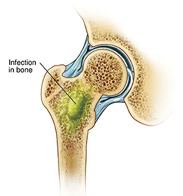
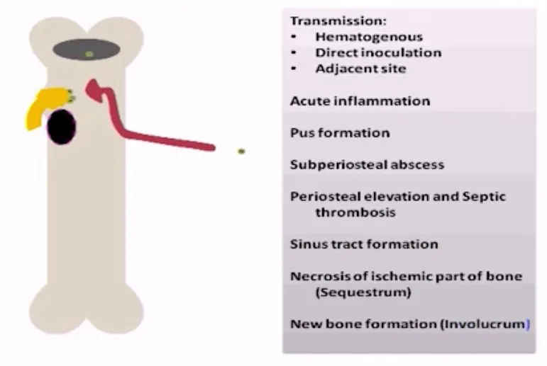
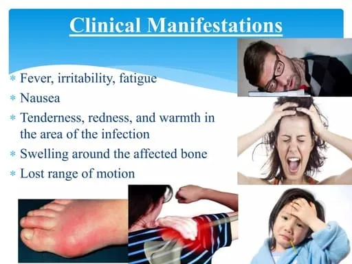

Expanded Nursing Uganda Explanation
Osteomyelitis should be understood beyond a short definition. Link the concept to patient history, focused assessment, common risks, nursing priorities, documentation and evaluation of outcomes.
01 Overview
Osteomyelitis is a serious infection of the bone and bone marrow.
The term itself literally means "inflammation of the bone marrow" (osteo = bone, myel = marrow, itis = inflammation).
This infection can affect any bone in the body, but it most commonly occurs in the long bones of the arms and legs (such as the femur, tibia, and humerus) in children, and in the vertebrae or feet in adults.
- Infectious Origin: Osteomyelitis is primarily caused by microorganisms, most commonly bacteria. Staphylococcus aureus is by far the most frequent causative agent across all age groups, but other bacteria, fungi, and in rare cases, viruses, can also be responsible.
- Location: The infection can involve any part of the bone, including the: Periosteum: The outer membrane covering the bone.
- Cortex: The dense outer layer of the bone.
- Medullary cavity: The inner cavity containing bone marrow.
- Cancellous (spongy) bone: Found at the ends of long bones and in flat bones.
- Pathophysiology (How it develops): Invasion: Microorganisms reach the bone through various routes (see below).
- Inflammation and Edema: The infection triggers an inflammatory response, leading to edema (swelling) within the rigid confines of the bone.
- Compromised Blood Supply: As inflammation and pressure increase, blood vessels become compressed, leading to decreased blood flow (ischemia) to the affected area of the bone.
- Bone Necrosis: Without adequate blood supply, bone cells die, leading to the formation of necrotic bone.
- Pus Formation: The body's immune response attempts to wall off the infection, leading to the formation of pus (abscess).
- Sequestrum and Involucrum: The dead bone (sequestrum) can become separated from the living bone. The body may then try to form new bone (involucrum) around the infected and necrotic area. This combination makes treatment challenging as antibiotics may not effectively penetrate the dead bone.
- Spread: The infection can spread to adjacent soft tissues, joints (septic arthritis), or even rupture through the skin, forming draining sinuses.
- Hematogenous (Bloodstream) Spread: This is the most common route, especially in children. Bacteria from a distant infection (e.g., skin infection, respiratory tract infection, urinary tract infection, or even a minor cut) travel through the bloodstream and seed in the bone, often in the highly vascular metaphysis of long bones.
- Direct Inoculation/Contiguous Spread: Trauma: Open fractures, penetrating wounds, animal bites, or surgery (e.g., orthopedic hardware placement).
- Spread from Adjacent Soft Tissue Infection: For example, a deep diabetic foot ulcer can extend into the underlying bone.
- Medical Procedures: IV catheter insertions, heel sticks in neonates.
- Vascular Insufficiency: Often seen in adults with diabetes or peripheral vascular disease, where poor blood supply to an area (e.g., the foot) makes it susceptible to infection that then spreads to the bone.
Osteomyelitis can be classified in several ways, each providing useful information about the infection's characteristics and implications for management. The most common classification systems consider the duration of the infection , the etiology (cause and route of infection) .
This is one of the most clinically relevant classifications as it often dictates the urgency and approach to treatment.
- Acute Osteomyelitis: Onset: Rapid, typically within days to a few weeks (usually less than 2 weeks) after the initial infection.
- Symptoms: Often presents with systemic signs such as fever, chills, malaise, and localized signs like intense pain, swelling, warmth, and redness over the affected bone.
- Prognosis: If promptly diagnosed and treated with appropriate antibiotics, acute osteomyelitis usually resolves without long-term complications.
- Common in: Children (often hematogenous spread).
- Subacute Osteomyelitis: Onset: Slower than acute, symptoms present over weeks to months (typically 2 weeks to a few months).
- Symptoms: Less severe systemic signs (or none at all), often with localized pain and swelling. May be overlooked or misdiagnosed initially.
- Special Type: Brodie's abscess is a classic form of subacute osteomyelitis, often found in the metaphysis of long bones, presenting as a walled-off abscess.
- Prognosis: Can be challenging to diagnose due to its insidious nature. Good prognosis with appropriate treatment.
- Chronic Osteomyelitis: Onset: Persistent infection lasting for months to years , or a recurrence of a previously treated infection. It can follow inadequately treated acute osteomyelitis or result from a persistent source of infection.
- Symptoms: May present with recurrent pain, draining sinuses (tracts through the skin from the infected bone), local swelling, and sometimes low-grade fever. Systemic signs are often absent.
- Pathological Features: Characterized by necrotic bone (sequestrum), new bone formation (involucrum), and often draining sinus tracts.
- Prognosis: Much more difficult to treat than acute forms, often requiring surgical debridement in addition to prolonged antibiotic therapy. High risk of recurrence.
- Common in: Adults, especially following trauma, surgery, or in patients with vascular insufficiency (e.g., diabetic foot infections).
- Hematogenous Osteomyelitis: Route: Bacteria spread to the bone via the bloodstream from a distant primary site of infection (e.g., skin infection, UTI, pneumonia).
- Common in: Infants and children (especially in the metaphysis of long bones).
- Causative Organism: Staphylococcus aureus is the most common.
- Contiguous-Focus Osteomyelitis: Route: Infection spreads directly to the bone from an adjacent soft tissue infection, or as a result of direct inoculation from trauma or surgery.
- Examples: Post-operative infections, infections from pressure ulcers, infections following open fractures, animal bites.
- Common in: All ages, particularly adults.
- Osteomyelitis Associated with Vascular Insufficiency: Route: Occurs in patients with compromised blood flow, typically in the extremities (e.g., feet in diabetic patients, peripheral vascular disease). The poor blood supply makes the tissue susceptible to infection, which then spreads to the bone.
- Common in: Adults, especially with underlying conditions like diabetes.
- Causative Organism: Often polymicrobial (multiple types of bacteria).
Osteomyelitis, while it can affect anyone, is more common in certain populations or under specific circumstances. These predisposing factors increase an individual's vulnerability to bone infection.
- Impaired Immune System: Immunosuppression: Conditions or medications that suppress the immune system significantly increase the risk. This includes: Chemotherapy or radiation therapy: For cancer treatment.
- Immunosuppressive drugs: Used in organ transplant recipients or for autoimmune diseases.
- Corticosteroid use: Prolonged or high-dose steroid therapy.
- Human Immunodeficiency Virus (HIV)/AIDS: Compromises cellular immunity.
- Malnutrition: Poor nutritional status can weaken the immune response.
- Chronic Diseases: Diabetes Mellitus: A major risk factor, especially for osteomyelitis of the foot. Poor glycemic control leads to: Neuropathy: Loss of sensation, leading to unnoticed injuries and ulcers.
- Vascular insufficiency: Reduced blood flow to extremities, impairing tissue healing and antibiotic delivery.
- Impaired immune function: Reduced ability to fight off infections.
- Sickle Cell Disease: Patients are prone to bone infarctions (tissue death due to lack of blood supply), which can provide a nidus for infection. Also, their functional asplenia makes them more susceptible to certain bacterial infections (e.g., Salmonella species, Staphylococcus aureus ).
- Peripheral Vascular Disease: Any condition causing reduced blood flow to the limbs (e.g., atherosclerosis) increases the risk of infection and hinders healing.
- Chronic Kidney Disease: Can impair immune function and lead to metabolic bone disease, potentially making bones more susceptible.
- Autoimmune Diseases: While some treatments (corticosteroids) are risk factors, the underlying inflammation might also play a role.
- Trauma: Open Fractures: Bone exposed to the environment is highly susceptible to bacterial contamination.
- Puncture Wounds: Especially if deep or caused by contaminated objects (e.g., stepping on a nail, animal bites).
- Pressure Ulcers (Bedsores): Deep ulcers can extend to the bone, particularly in patients with limited mobility.
- Surgery and Invasive Procedures: Orthopedic Surgery: Procedures involving bone (e.g., internal fixation of fractures, joint replacements, spinal surgery) can introduce bacteria directly.
- Prosthetic Devices: Implantation of foreign bodies (e.g., artificial joints, metal plates, screws) provides a surface for bacteria to adhere and form biofilms, making eradication difficult.
- Intravenous Catheters (IVs), Central Lines: Can be a source of bloodstream infections that can spread hematogenously to bone.
- Hemodialysis: Patients on dialysis often have multiple access sites and are more prone to bloodstream infections.
- Local Infections: Deep Soft Tissue Infections: Cellulitis, abscesses, or infected wounds adjacent to bone can spread contiguously.
- Dental Infections: Can lead to osteomyelitis of the jaw (mandibular osteomyelitis).
- Prematurity and Low Birth Weight: Immature immune systems.
- Neonatal Sepsis: Bloodstream infections in newborns can easily seed in bones due to rich vascularity.
- Minor Trauma: Even seemingly minor bumps or bruises can create microscopic hematomas in bones, providing a good medium for circulating bacteria to settle.
- Invasive Neonatal Procedures: Heel sticks, umbilical catheterization, scalp electrodes can be entry points for bacteria.
- Lack of Immunizations: While not a direct cause, some vaccines protect against bacteria that can cause osteomyelitis.
- Intravenous Drug Use (IVDU): Sharing needles can introduce bacteria directly into the bloodstream, leading to hematogenous spread, often affecting atypical sites like the vertebrae or sternum.
- Poor Hygiene: Can increase the risk of skin infections that can then spread.
- Systemic Manifestations (Due to infection spreading through the body): Fever: Often high-grade (e.g., >38.5°C or 101.3°F). This is a hallmark sign.
- Chills and Rigors: Shaking chills.
- Malaise: General feeling of discomfort, illness, or uneasiness.
- Irritability: Especially in infants and young children, who may not be able to verbalize pain.
- Loss of Appetite/Poor Feeding: Common with any systemic illness.
- Nausea and Vomiting: Less common but can occur.
- Local Manifestations (At the site of infection): Severe Localized Pain: This is often the most prominent symptom. The pain is typically constant, deep, throbbing, and worse with movement or weight-bearing.
- Tenderness: Exquisite tenderness to palpation over the affected bone.
- Swelling: Over the affected area, which may appear warm and erythematous (red).
- Limited Range of Motion: The child may refuse to move the affected limb (pseudoparalysis) or bear weight on it. In infants, this might manifest as guarding the limb.
- Warmth: Increased temperature of the skin over the inflamed bone.
- Erythema: Redness of the overlying skin.
- Pseudoparalysis: The infant does not move the affected limb. This is often the most common and earliest sign.
- Irritability: Increased fussiness or crying.
- Poor Feeding: Refusal to feed or decreased intake.
- Fever: May or may not be present; can sometimes present with hypothermia instead.
- Local Swelling and Tenderness: May be present but can be subtle.
- No specific signs of inflammation: Redness and warmth might be absent or minimal.
- Systemic signs of sepsis: Jaundice, lethargy, respiratory distress.
- Insidious Onset: Symptoms develop slowly over weeks to months.
- Less Severe Symptoms: Often localized pain that is milder than acute osteomyelitis.
- Fever: May be low-grade or absent.
- Swelling: Localized swelling may be present.
- Limited Range of Motion: May or may not be present.
- Often Misdiagnosed: Can be mistaken for growing pains, sprains, or other musculoskeletal conditions due to the lack of dramatic symptoms.
- Persistent or Recurrent Pain: Often dull, aching, or throbbing.
- Draining Sinus Tracts: A hallmark sign. Pus may periodically drain from an opening in the skin, often leaving a scar.
- Local Swelling and Tenderness: Can be intermittent.
- Bone Deformity: May develop over time due to persistent infection and bone remodeling.
- Pathological Fractures: The weakened bone may be prone to fracturing with minimal trauma.
- Fever: May be absent or low-grade during flare-ups.
- Systemic Symptoms: Generally less prominent than in acute osteomyelitis, unless there's an acute exacerbation.
- History: Onset and duration of symptoms, presence of fever, pain characteristics (location, severity, aggravating/alleviating factors), recent trauma or surgery, underlying medical conditions (e.g., diabetes, sickle cell), recent infections, and immunosuppression.
- Physical Examination: Assessment for localized signs of inflammation (tenderness, warmth, swelling, erythema), limited range of motion, pseudoparalysis (in infants), and presence of draining sinuses.
- Complete Blood Count (CBC) with Differential: White Blood Cell (WBC) Count: Often elevated with a left shift (increased neutrophils) in acute bacterial infections. However, it can be normal, especially in chronic, subacute, or neonatal osteomyelitis.
- Erythrocyte Sedimentation Rate (ESR): Elevated: A non-specific marker of inflammation. It is usually elevated in acute osteomyelitis and often remains elevated longer than CRP. Useful for monitoring treatment response.
- C-Reactive Protein (CRP): Elevated: Another non-specific acute-phase reactant. CRP often rises more rapidly and falls more quickly than ESR, making it a good marker for initial diagnosis and monitoring early treatment response.
- Blood Cultures: Positive in 30-50% of acute hematogenous osteomyelitis cases: Essential for identifying the causative organism and guiding antibiotic therapy. Should be drawn before antibiotics are started.
- Procalcitonin: Elevated in bacterial infections: Helpful marker for differentiating bacterial from viral infections and monitoring response.
- Plain Radiographs (X-rays): Early Stages: May be normal in the first 7-10 days of acute osteomyelitis as bone changes take time to develop.
- Later Findings: Soft tissue swelling, periosteal elevation/reaction, cortical destruction/lysis, Sequestrum (dead bone fragments), and Involucrum (new bone formation).
- Magnetic Resonance Imaging (MRI): Most sensitive and specific imaging modality: Detects bone marrow edema, cortical disruption, and abscess formation.
- Advantages: Excellent visualization of structures.
- Disadvantages: High cost, long scan time, requires sedation for young children.
- Bone Scintigraphy (Technetium-99m bone scan): Highly sensitive: Detects increased turnover within 24-72 hours.
- Triple-Phase Bone Scan: Distinguishes osteomyelitis from cellulitis.
- Gallium Scan (Gallium-67 citrate scan): Specificity: More specific for infection than a bone scan.
- Computed Tomography (CT Scan): Useful for: Assessing cortical bone destruction and defining extent of chronic cases.
- Bone Biopsy (Percutaneous or Open Surgical Biopsy): Definitive diagnostic method: Samples sent for Gram stain, culture (aerobic, anaerobic, fungal, mycobacterial), and histopathology.
- Advantages: Provides direct evidence of organism.
- Aspiration of Subperiosteal Abscess or Joint Fluid: If an abscess is identified, aspiration provides fluid for culture. Arthrocentesis if joints are involved.
- Wound Swabs/Draining Sinus Cultures: Least reliable: Surface cultures often grow contaminants and do not reflect the organism within the bone.
- Clinical Suspicion + Lab Tests (ESR, CRP, CBC, Blood Cultures).
- Imaging (X-ray initially, then MRI for definitive diagnosis if X-rays are normal or inconclusive).
- Microbiological Confirmation (Bone Biopsy/Aspiration) for targeted therapy.
Management can be medical or surgical or both.
- To preserve limb and joint function
- To prevent further complications
- To eliminate the infection, relieve pain, preserve bone integrity and function, and prevent recurrence
- Child is admitted to pediatric ward.
- History includes name, sex, address, nationality. Past medical and surgical history taken.
- Vital observation: T, P, R, and BP recorded.
- Assessment of limb for redness, hotness, edema; general head-to-toe examination.
- Empiric Therapy: Start promptly: Without waiting for culture results.
- Broad-spectrum: Covers S. aureus (including MRSA) and Gram-negative bacilli. Neonates require broader coverage (Group B Strep). Sickle cell patients require Salmonella coverage.
- Administration: Typically high doses intravenously.
- Definitive Therapy: Culture-directed: Once results are available, narrow the regimen.
- Duration: Prolonged, typically 4 to 6 weeks (up to 3 months for chronic cases).
- Route: Initial IV (1-2 weeks), then transition to oral if criteria are met.
- Administration details: IV Cloxacillin: Child below 12yrs: 50 mg/kg every 6 hours; Above 12yrs: 500 mg IV every 6 hours for 2 weeks. Continue orally for at least 4 weeks.
- Ceftriaxone: 50mg-100mg/kg for about 10 days. Vancomycin, penicillin, or ciprofloxacin also used.
- Debridement: Excising dead bone (sequestrum), pus, and infected soft tissue until healthy, bleeding bone is reached.
- Removal of Foreign Bodies: Removal of infected orthopedic implants or hardware.
- Bone Reconstruction: Bone grafting (autograft or allograft), vascularized bone flaps, or external fixators.
- Amputation: Last resort for severe, intractable cases with extensive tissue destruction.
- Pain Management: Analgesics (NSAIDs to opioids) and immobilization (splinting/casting).
- Wound Care: Dressing changes, wound VAC therapy.
- Nutritional Support: High-protein, high-calorie diet with Vitamin C and Zinc.
- Hyperbaric Oxygen Therapy (HBOT): For chronic refractory cases to enhance antibiotic activity.
- Underlying Conditions: Strict glycemic control for DM; vascular revascularization if PVD is present.
- Chronic Osteomyelitis: The most common persistent complication when necrotic bone (sequestrum) remains.
- Bone Deformity and Growth Disturbances: Physeal (Growth Plate) Arrest: Can result in limb length discrepancies or angular deformities.
- Pathological Fractures: Bone weakening due to destruction.
- Abscess Formation: Subperiosteal, intraosseous (Brodie's), or soft tissue.
- Septic Arthritis: Rupture of infection into nearby joint spaces.
- Skin and Soft Tissue: Draining sinus tracts; Cellulitis; Malignant Transformation (Marjolin's ulcer - squamous cell carcinoma).
- Loss of Limb Function: Due to atrophy, nerve damage, or amputation.
- Sepsis and Septic Shock: Can lead to multi-organ failure and death.
- Bacteremia Spread: Leading to Endocarditis, Meningitis, or Pneumonia.
- Anemia of Chronic Disease: Inflammation suppresses RBC production.
- Pain: Regularly assess using scales (Wong-Baker FACES/Numeric). Note location and quality (throbbing/aching).
- Vital Signs: Monitor for fever, tachycardia, or hypotension (sepsis).
- Local Site: Inspect for redness, warmth, swelling. Assess drainage (amount/odor).
- Neurovascular: Check color, temperature, sensation, capillary refill distal to the site (the 6 Ps).
- Neurosensory: (For vertebral cases) Monitor bowel/bladder function and reflexes for cord compression.
- Lab Monitoring: Review WBC, CRP, ESR, and renal/liver function tests.
- Antibiotics: Strict adherence to around-the-clock schedule. Manage IV access (PICC lines). Monitor for rash, diarrhea, or C. diff .
- Wound Care: Strict aseptic technique. Document drainage. Maintain draining sinuses to protect surrounding skin.
- Positioning: Reposition every 2 hours to prevent pressure ulcers. Ensure proper body alignment.
- Activity Restriction: Educate on non-weight bearing status. Assist with crutches/walkers.
- Patient Education: Explain disease process, medication compliance (completing the full course), and signs of complications (new drainage, fever).
- Psychosocial: Acknowledge the burden of chronic pain. Refer to social work or PT as needed.
Related to inflammatory process within the bone, bone destruction, and nerve compression.
- Intervention Rationale
- Regularly assess pain level using a validated scale (0-10 or FACES). Note location, quality, duration, and aggravating factors. Provides baseline data and monitors effectiveness; pain is subjective and requires patient self-report.
- Administer prescribed opioid or non-opioid analgesics around the clock initially, or before pain becomes severe. Consider PCA for severe post-op pain. Maintains consistent therapeutic drug levels, preventing pain escalation and promoting rest.
- Provide non-pharmacological relief: proper positioning, pillow support, hot/cold therapy, massage, and distraction techniques (music/imagery). Adjunctive therapies can reduce pain, anxiety, and the need for higher doses of medication.
- Assist with proper application and maintenance of splints, casts, or traction as ordered. Reduces movement of the infected bone, thereby decreasing pain and preventing further tissue damage.
- Educate patient/family on the regimen, side effects, and reporting uncontrolled pain promptly. Empowers patient/family to actively participate in management, leading to better control and adherence.
Related to inadequate primary defenses (broken skin, draining sinuses) and presence of necrotic tissue.
- Intervention Rationale
- Maintain strict aseptic technique: meticulous hand hygiene and sterile technique for wound care, dressings, and IV site maintenance. Prevents introduction of new pathogens and cross-contamination.
- Monitor for signs: regularly assess wound sites and sinuses for redness, warmth, purulent drainage, and monitor vital signs for fever/tachycardia. Early detection allows for prompt intervention to prevent spread or worsening of infection.
- Administer antibiotics exactly as prescribed (IV or oral) at correct dose and frequency. Monitor for therapeutic effects and reactions. Eradicates the causative organisms and prevents bacterial proliferation.
- Provide meticulous wound care: cleanse as ordered, apply sterile dressings, and use skin barriers for draining sinuses. Promotes a clean wound environment, absorbs exudate, and prevents skin breakdown.
- Optimize nutritional status: encourage high-protein, high-calorie diet with adequate Vitamin C and Zinc. Adequate nutrition is essential for immune function, tissue repair, and wound healing.
Related to pain, bone destruction, and activity restrictions (e.g., non-weight bearing).
- Intervention Rationale
- Assess functional mobility: evaluate current level of mobility, strength, and ability to perform ADLs. Establishes a baseline for care planning and identifies specific areas of limitation.
- Assist with position changes: reposition patient every 2 hours, ensuring body alignment and supporting the affected limb. Prevents complications of immobility (pressure ulcers, contractures) and protects the affected bone.
- Encourage ROM exercises: passive ROM on unaffected joints; perform active ROM on unaffected limbs. Perform ROM on affected limb only if prescribed. Maintains joint flexibility, prevents stiffness, and preserves muscle strength.
- Provide assistive devices: instruct on safe use of crutches, walkers, or wheelchairs with proper fitting. Promotes independence within safe limits and reduces the risk of injury.
- Collaborate with PT/OT for prescribed exercises, strength training, and functional retraining. Specialized therapists develop individualized programs to maximize recovery of strength and mobility.
Related to lack of exposure and misinterpretation of information regarding prolonged treatment.
- Intervention Rationale
- Assess current knowledge: ask what they know about osteomyelitis, treatment, and home care. Identify specific gaps or misconceptions. Tailors education to the individual's needs and current understanding.
- Provide comprehensive information: explain disease process, cause, importance of prolonged treatment, and signs/symptoms to report. Increases understanding, promoting adherence and empowering self-management.
- Educate on medication: provide detailed written/verbal instructions on antibiotics (name, dose, frequency, importance of completion). Ensures safe and effective administration and adherence, crucial for eradicating infection.
- Teach wound care: demonstrate hand hygiene, sterile dressing changes, and signs of wound infection. Allow for return demonstration. Equips patient/family with practical skills for home care and early recognition of complications.
- Explain activity restrictions: clearly communicate weight-bearing restrictions and follow-up schedules. Prevents re-injury, supports rehabilitation, and ensures continuity of care.
- Start Early: Anticipate discharge needs from admission.
- Home Care Coordination: Arrange home health services for IV antibiotics, wound care, or PT.
- Equipment Needs: Order crutches, walker, or hospital bed.
- Follow-up Appointments: Ensure all physician and lab appointments are scheduled and confirmed.
02 Nursing Uganda Clinical Lens
Use Osteomyelitis as a practical nursing topic, not only a memorized definition. Connect structure, movement, pain, circulation, nerve function and safe mobility.
- What to understand first: define osteomyelitis, identify the normal or expected pattern, then explain what changes when the patient is unwell.
- Why it matters in care: the nurse must recognize risk early, explain findings clearly, document accurately and know when to escalate.
- How to revise it: connect each point to assessment, nursing diagnosis or care problem, intervention, rationale and evaluation.
03 Assessment Guide
- Pain score, site, onset, deformity, swelling, bruising and ability to move.
- Distal pulse, capillary refill, colour, warmth, sensation and movement.
- Skin integrity, wounds, cast tightness, traction alignment and pressure areas.
04 Nursing Priorities, Rationales and Outcomes
- Immobilize and protect the affected part while preventing further injury.
- Control pain and swelling while monitoring neurovascular status.
- Prevent complications such as compartment syndrome, infection, pressure injury and venous stasis.
The rationale for these priorities is patient safety: nursing actions should prevent deterioration, reduce discomfort, support recovery and create clear evidence for the next caregiver.
- Expected outcome: Pain is reduced, circulation and sensation remain intact, swelling is controlled and the patient mobilizes safely within the care plan.
05 Patient Teaching and Revision Check
- Explain osteomyelitis in simple language the patient or caregiver can repeat back.
- Teach warning signs, medicine or follow-up instructions, hygiene or lifestyle points where relevant.
- For exams, prepare a short answer using: definition, causes or risk factors, signs, assessment, management, complications and prevention.
- For ward practice, document baseline findings, actions taken, patient response and the plan for review.
Illustrations and Diagrams (6)





Related Video Lectures
Watch nursing lecture videos on YouTube for this topic. Opens in a new tab.
Watch on YouTubeExternal link: YouTube may use its own cookies and terms. Nursing Uganda is not affiliated with YouTube.